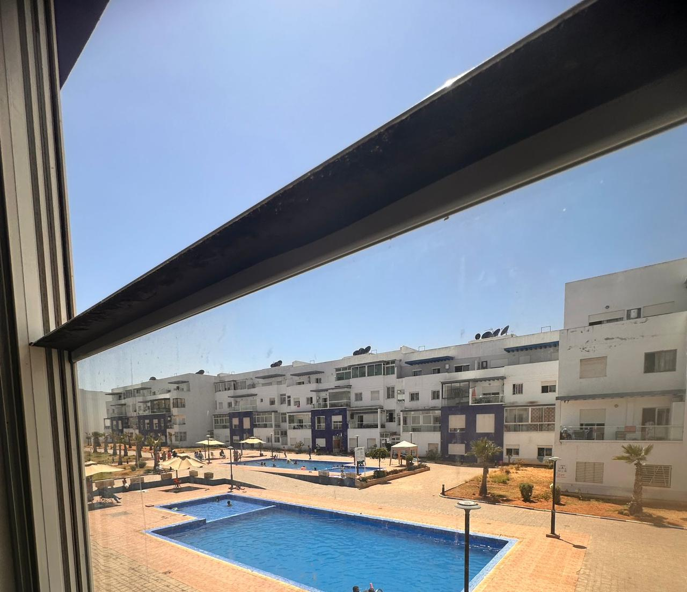
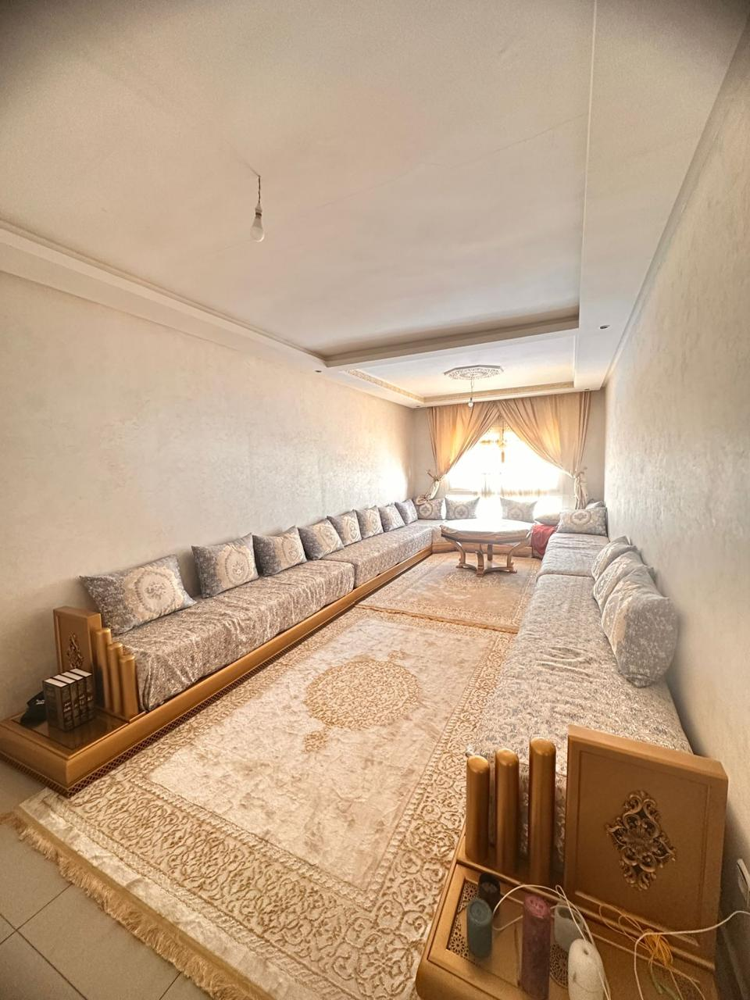
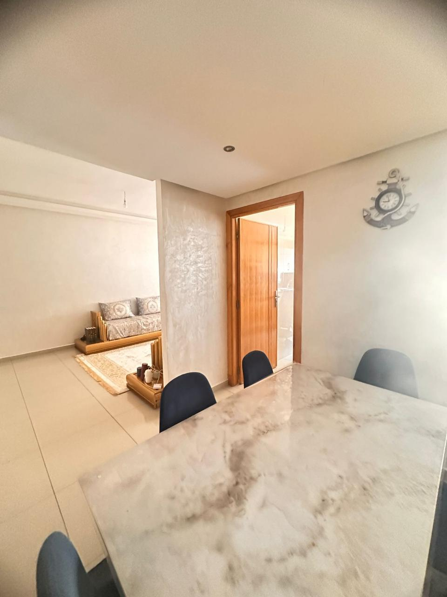
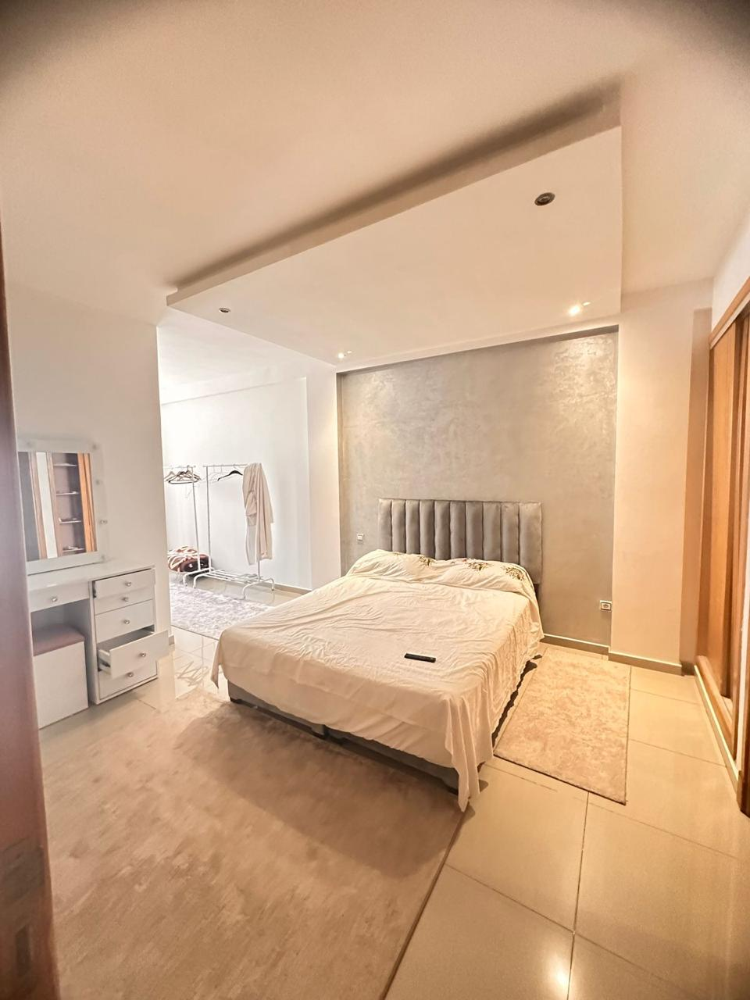
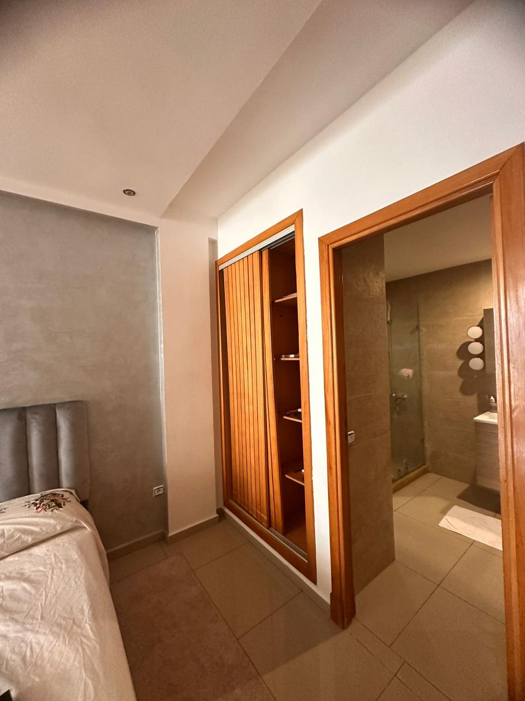
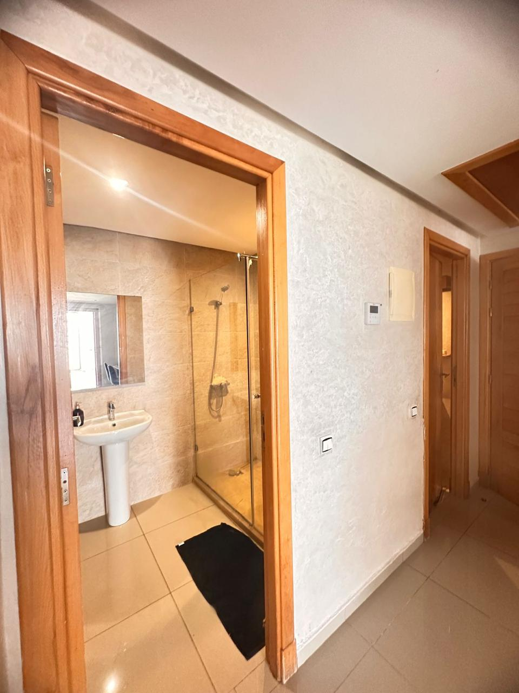
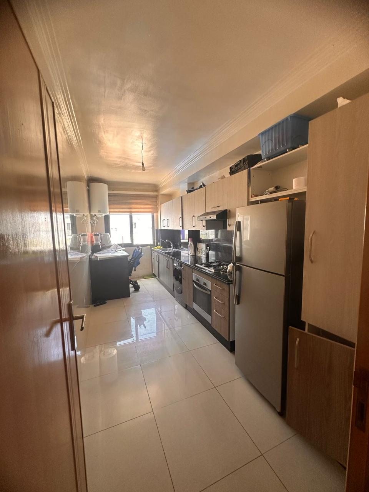

Appartement Les Terrasses 2
5 500 MAD/mois
2 chambres • Piscine • El Mansouria









Description
Situé au 1er étage de la résidence Les Terrasses 2 à El Mansouria, cet appartement bénéficie d’un emplacement central privilégié, à proximité immédiate de toutes les commodités et de la plage. L’appartement se compose de 2 chambres confortables, 2 salles de bain, un salon lumineux et une cuisine fonctionnelle, offrant un espace de vie agréable et pratique au quotidien. Idéal pour une location longue durée, dans un environnement vivant et proche de tout.
Caractéristiques
📍 Localisation : El Mansouria
🛏️ Chambres : 2
🛁 Salles de bain : 2
Contacter sur WhatsApp